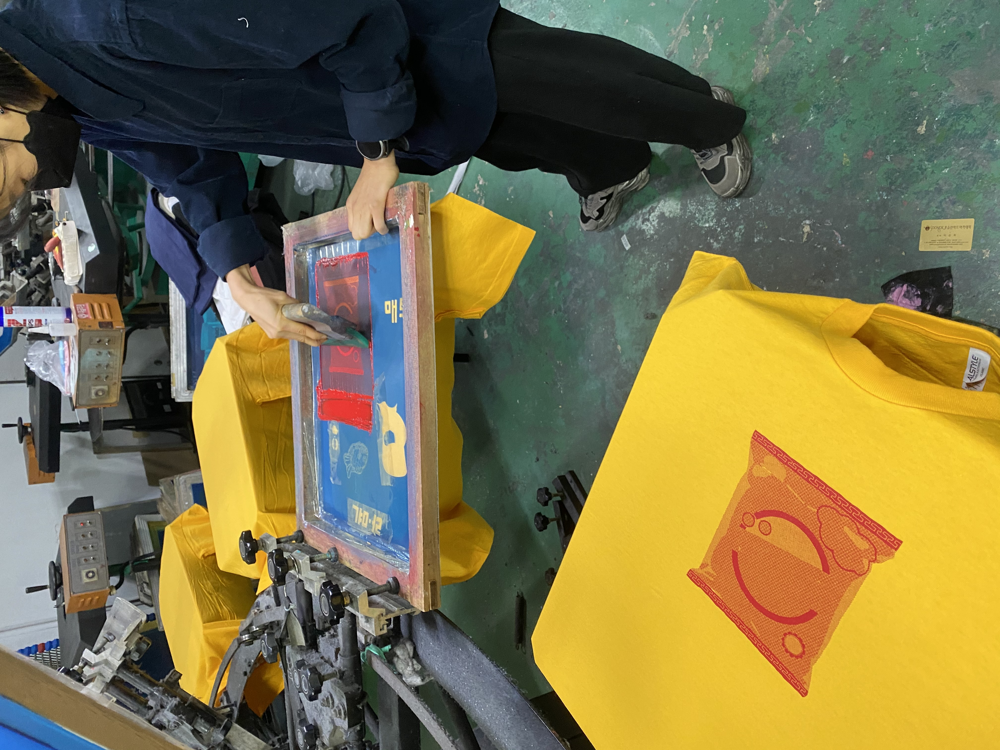

앤디 워홀의 《마를린 먼로⟫로 잘 알려진
실크스크린은 인쇄 기법 중 하나이다.
촘촘히 짜여진 실크 구멍 사이로
잉크를 통과시켜 인쇄한다.
ME
NU


What is a
silk screen?
silk screen?
Why am I do?
다니던 학교를 졸업하고
1년간 Gap year를 가지던 참에
학교 밖 청소년 지원센터에서
진로체험을 할 수 있는 기회를 얻었다.
평소 옷과 디자인에 관심이 많은 나는
망설임 없이 실크스크린 스튜디오에 지원했다.
새로운 기술을 배우고, 전시회를 준비하면서
내가 할 수 있는게 많아질수록
내 생각의 폭과 내가 활용할 수 있는
아이디어 또한 다양해짐을 느꼈다.
1년간 Gap year를 가지던 참에
학교 밖 청소년 지원센터에서
진로체험을 할 수 있는 기회를 얻었다.
평소 옷과 디자인에 관심이 많은 나는
망설임 없이 실크스크린 스튜디오에 지원했다.
새로운 기술을 배우고, 전시회를 준비하면서
내가 할 수 있는게 많아질수록
내 생각의 폭과 내가 활용할 수 있는
아이디어 또한 다양해짐을 느꼈다.